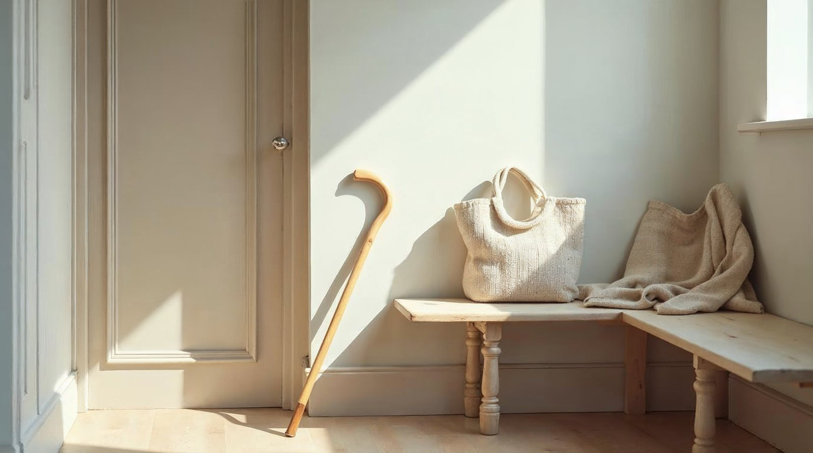
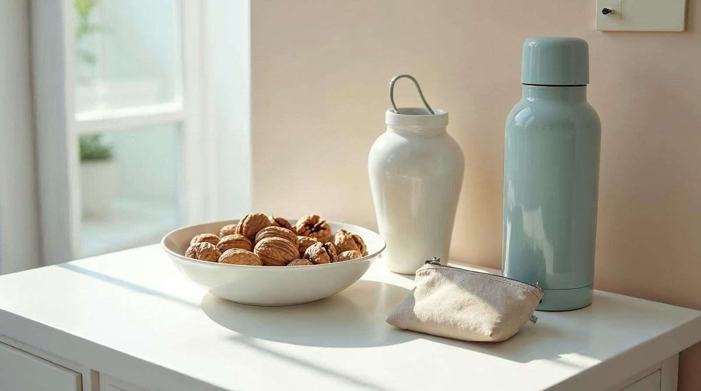

이종호 한의사 감수좋은꿈참사랑한의원 대표원장 (한의사 면허번호 19769)발행 2026-11-24 · 수정 2026-11-26
이 글의 차례
- 왜 미리 준비하면 좋을까요
- 왜 드시는 약을 전부 확인해야 할까요
- 약 봉투는 이렇게 모아 오세요
- 먼저 이렇게 여쭙니다
- 나이 들며 생기는 변화와 살펴볼 변화는 다른 얘기예요
- 이런 모습이 보였다면 적어 와 주세요
- 처음 한의원이 낯선 부모님께
- 일상에서 먼저 해 볼 수 있는 것
- 집에서 재 둔 기록이 있다면
- 부모님 본인의 말씀을 먼저 들어요
- 잘 안 들리시거나 기억이 흐려지셨다면
- 잠과 식사는 왜 꼭 여쭤볼까요?
- 시간대는 이렇게 골라 보세요
- 오시는 날 컨디션 챙기기
- 한의원에서 함께 살필 수 있는 경우
- 다녀오신 뒤 보호자께서 챙기실 것
- 다음 진료는 어떻게 이어지나요
- 자녀분도 지치지 않게
- 하나만 부탁드릴게요
- 이렇게 기록해 오시면 상담이 쉬워집니다
- 이런 증상은 먼저 확인이 필요합니다
연세 드신 부모님을 모시고 처음 오실 때는 드시는 약을 약 봉투째 가져오시고, 불편한 점과 시작된 시기를 보호자가 미리 메모해 오시면 진료실에서 이야기가 훨씬 수월해집니다. 어르신이 직접 설명하기 어려운 부분은 평소 곁에서 지켜본 가족의 이야기가 큰 도움이 됩니다.
부모님을 모시고 오시는 자녀분들 얼굴을 보면 걱정이 한가득이에요. "요즘 부쩍 기운이 없으세요", "밤에 자꾸 깨신대요" 하시면서요. 정작 부모님은 옆에서 "나는 괜찮다니까" 하시고요. 진료실에서 정말 자주 보는 장면이에요.
그러니까 사실은 두 분 말씀이 다 맞는 경우가 많아요. 부모님은 그럭저럭 견딜 만하신 거고, 자녀분은 예전 모습과 비교하니 달라진 게 보이는 거죠. 그래서 저는 두 분 이야기를 다 들어요. 그걸 잘 듣기 위해 준비해 오시면 좋은 것들을 정리했어요.
왜 미리 준비하면 좋을까요
- 어르신은 여러 병원에서 약을 받아 드시는 경우가 많아, 약을 모두 확인해야 한약이나 치료 방법을 안전하게 정할 수 있습니다.
- 진료실에서는 긴장해 평소 불편을 다 말씀하지 못하시는 경우가 있습니다.
- 잘 들리지 않거나 기억이 흐려지신 부분은 보호자의 설명이 필요합니다.
- 덜 피곤하신 시간에 오셔야 이야기를 나누기 편합니다.
왜 드시는 약을 전부 확인해야 할까요
연세가 드시면 혈압, 당, 관절, 잠 때문에 병원을 여러 곳 다니시게 되잖아요. 그러다 보면 어느 병원에서 무슨 약을 받았는지 본인도 헷갈리시는 경우가 많아요. 가족도 다 모르시는 경우가 흔하고요.
약을 다 알아야 하는 이유는 간단해요. 한약을 정할 때 지금 드시는 약과 겹치거나 부딪히지 않는지 먼저 봐야 하거든요. 침 치료를 할 때도 피를 묽게 하는 약을 드시는지 같은 것은 미리 알고 있어야 해요.
처방약만이 아니에요. 영양제, 건강식품, 누가 좋다고 해서 드시는 즙이나 달인 물도 다 알려 주세요. 어르신들은 이런 걸 약이라고 생각 안 하셔서 말씀을 안 하시는 경우가 많거든요.
처방받은 약은 처방한 의사와 상의 없이 줄이거나 끊지 않습니다. 한의원에 다니신다고 드시던 약을 멈추실 필요는 없어요. 양방으로 잘 되는 건 그대로 하시고, 그 위에서 제가 도와드릴 수 있는 걸 찾는 거예요.
약 봉투는 이렇게 모아 오세요
- 집에 있는 약 봉투와 약통을 큰 봉투 하나에 다 담아 오기
- 가져오기 번거로우면 약 이름이 보이게 사진 찍기
- 영양제와 건강식품도 같이 담기
- 약국에서 받은 복약 안내문이 있으면 함께 챙기기
전날 저녁에 부모님과 같이 약 서랍을 열어 보시는 것도 좋아요. 이미 끊은 약인지, 지금도 드시는 약인지 그 자리에서 여쭤보시면 진료실에서 헷갈릴 일이 줄어들거든요.
약을 하루에 몇 번, 언제 드시는지도 같이 적어 두시면 좋아요. 아침에 몇 알, 저녁에 몇 알 정도로요. 한약을 드시게 되면 드시던 약과 시간을 어떻게 나눌지 정할 때 그 메모가 바로 쓰여요.
먼저 이렇게 여쭙니다
- 부모님이 가장 불편해하시는 점이 무엇인가요?
- 드시는 약이 몇 가지인가요? 약 봉투나 처방전이 있나요?
- 최근 건강검진이나 병원 검사 결과가 있나요?
- 잘 들리지 않으시거나 기억이 흐려지신 부분이 있나요?
나이 들며 생기는 변화와 살펴볼 변화는 다른 얘기예요
두 개가 다른 얘기거든요. 연세가 드시면 잠이 얕아지고, 입맛이 줄고, 무릎이 예전 같지 않은 건 원래 그래요. 때가 돼서 오는 자연스러운 변화인 경우가 많아요. 그것만으로 큰 병을 걱정하실 필요는 없어요.
그런데 그 변화가 갑자기 왔거나, 몇 주 사이에 눈에 띄게 달라졌다면 이야기가 조금 달라요. 예를 들어 잘 드시던 분이 한 달 사이 확 못 드시게 됐다거나, 잘 걷던 분이 부쩍 비틀거리신다면 그 시기와 모습을 꼭 적어 와 주세요.
그래서 저는 "언제부터요?"를 자주 여쭤봐요. 서서히 온 건지, 갑자기 온 건지에 따라 살필 방향이 달라지거든요. 자녀분이 기억하시는 날짜가 큰 단서가 돼요.
이런 모습이 보였다면 적어 와 주세요
- 예전보다 식사량이 눈에 띄게 줄었다
- 밤에 자주 깨시거나 낮에 조는 시간이 늘었다
- 화장실을 자주 가시거나 변비가 심해졌다
- 걸음이 느려지고 넘어질 뻔한 일이 있었다
- 같은 말을 자주 되물으시거나 약 드시는 걸 잊으신다
- 기운이 없다며 밖에 잘 안 나가신다
하나하나는 나이 들면서 흔히 보이는 모습일 수 있어요. 그래도 몇 가지가 한꺼번에 보이거나 최근에 생겼다면, 언제부터인지 함께 적어 와 주세요. 진료실에서 이야기를 시작하는 좋은 출발점이 돼요.
처음 한의원이 낯선 부모님께
한의원이 처음이신 어르신들은 "침 맞으면 아프냐"고 제일 먼저 물어보세요. 그 걱정 때문에 오시기를 미루시는 분도 계시고요. 그런 걱정은 진료실에서 편하게 말씀하시면 돼요. 어떤 치료를 할지는 진찰한 뒤에 같이 정하는 거예요.
진맥은 손목에 손가락을 가볍게 얹어 맥을 살피는 거라 아프지 않아요. 어떤 걸 보고 무엇을 여쭤보는지 미리 알고 오시면 덜 긴장되실 거예요. 어르신이 처음 진맥을 받으실 때 무엇을 보고 어떤 것을 여쭙나요?에 정리해 두었으니 부모님과 같이 읽어 보셔도 좋아요.
일상에서 먼저 해 볼 수 있는 것
- 드시는 약은 약 봉투째 가져오거나 사진을 찍어 오기
- 불편한 점과 시작된 시기를 메모해 오기
- 걷기가 불편하시면 오시는 길과 주차를 미리 전화로 확인하기
- 덜 피곤하신 오전 시간대로 예약하기
집에서 재 둔 기록이 있다면
집에서 혈압이나 혈당을 재고 계신다면 그 기록을 가져와 주세요. 수첩에 적어 두신 것도 좋고, 기계에 남은 숫자를 사진으로 찍어 오셔도 돼요. 며칠 치가 모여 있으면 흐름을 보기가 쉬워요.
요즘 몸무게가 줄었거나 늘었다면 그것도 알려 주세요. 언제부터 얼마나 달라졌는지 대강만 기억하셔도 충분해요. 어르신은 체중 변화가 몸 상태를 보여 주는 중요한 신호인 경우가 많거든요.
최근 건강검진 결과지는 요약 쪽과 다시 검사하라고 표시된 쪽만 챙겨 오셔도 괜찮아요. 다른 병원에서 받은 영상 검사 결과가 있다면 그 내용도 함께 알려 주세요.
부모님 본인의 말씀을 먼저 들어요
자녀분이 걱정되는 마음에 처음부터 다 대신 말씀하시는 경우가 있어요. 그 마음은 충분히 알아요. 그래도 저는 먼저 부모님께 여쭤봐요. 어디가 어떻게 불편하신지는 본인이 제일 잘 아시거든요.
부모님이 말씀을 마치시면 그때 자녀분께 보태 달라고 부탁드려요. "어머님은 괜찮다고 하시는데 집에서는 어떠세요?" 하고요. 그러면 두 분 이야기가 맞춰지면서 그림이 훨씬 또렷해져요.
어르신은 자녀 앞에서 약한 모습 보이기 싫어서 괜찮다고만 하시는 경우도 있어요. 그럴 땐 천천히, 편하게 말씀하실 수 있도록 기다려 드려요. 어르신의 속도에 맞추는 게 결국 제일 빠른 길이거든요. 서두르면 정작 중요한 이야기는 다음으로 미뤄지기 쉬워요.
잘 안 들리시거나 기억이 흐려지셨다면
보청기를 쓰신다면 꼭 끼고 오시게 챙겨 주세요. 진료실에서는 제가 천천히, 또박또박 여쭤볼게요. 그래도 잘 안 들리시면 자녀분이 곁에서 다시 말씀드려 주시면 돼요.
기억이 흐려지셨다면 자녀분의 메모가 특히 중요해요. 부모님이 기억하지 못하시는 부분을 대신 채워 주는 거니까요. 다만 부모님 앞에서 너무 단정적으로 "엄마는 기억을 못 하셔"라고 하시기보다, 부드럽게 보태 주시면 어르신도 덜 서운해하세요.
눈이 침침하신 어르신이라면 돋보기도 챙겨 주세요. 안내문을 직접 읽어 보고 싶어 하시는 분들이 많거든요. 본인이 직접 보고 들으셔야 마음이 놓이시는 거예요.
잠과 식사는 왜 꼭 여쭤볼까요?
부모님은 무릎이 아파서 오셨는데 제가 잠은 어떠시냐, 대변은 잘 보시냐 여쭤보면 의아해하시는 분들이 있어요. 그런데 어르신의 몸은 이런 기본 리듬이 흔들리면 다른 불편도 같이 커지는 경우가 많거든요.
밤에 서너 번씩 깨시면 낮에 기운이 없고, 기운이 없으니 덜 움직이시고, 덜 움직이시니 입맛도 줄어요. 하나가 다른 하나를 끌고 가는 거예요. 잠이 보약이라는 말이 어르신께는 더 그대로 맞아요.
그래서 몇 시에 주무시고 몇 번 깨시는지, 하루 몇 끼를 얼마나 드시는지, 대변은 며칠에 한 번 보시는지를 대강만 적어 와 주세요. 이 세 가지가 진료의 바탕이 돼요.
시간대는 이렇게 골라 보세요
어르신은 보통 오전에 기운이 더 있으신 경우가 많아요. 점심 드신 뒤에는 졸리시거나 기운이 처지실 수 있어서, 가능하면 덜 피곤하신 시간대를 골라 주세요.
주말에 모시고 오신다면 토·일·공휴일은 오후 3시까지 진료한다는 것도 기억해 두세요. 자녀분 일정에 맞추다 마감 직전에 서둘러 오시면 부모님이 더 지치실 수 있거든요.
오시는 날 컨디션 챙기기
오시는 날 아침에는 평소처럼 식사하시고, 드시던 약도 평소대로 드시고 오세요. 긴장해서 아침을 거르시면 오히려 더 지치실 수 있거든요.
걷기가 불편하시면 무리해서 걸어오시기보다 편한 방법을 고르세요. 오르막 길이 걱정되신다면 무릎이나 허리가 불편한데 상도역에서 한의원까지 걸어오려면 어떻게 오면 좋을까요?를 미리 봐 두셔도 좋아요.
옷은 소매를 걷기 쉽고 벗고 입기 편한 것으로 챙겨 주세요. 진료받으시면서 손목이나 무릎을 보여 주셔야 할 때가 있거든요. 계절에 따라 얇은 겉옷 한 벌을 더 챙기시면, 오가는 길에 땀이 식어 한기가 드시는 걸 막을 수 있어요.

한의원에서 함께 살필 수 있는 경우
- 어르신이 직접 말씀하시기 어려운 부분은 보호자의 이야기도 함께 듣습니다.
- 잠, 식사, 소화, 대소변처럼 몸 전체의 리듬을 함께 살핍니다.
- 복용 중인 약을 확인하고 진찰 후 맞는 방법을 함께 정합니다.
좋은꿈참사랑한의원에서는 모든 분께 맥부터 짚으며 어르신의 이야기를 천천히 여쭙고, 보호자의 설명도 함께 듣습니다. 필요에 따라 혀와 배도 살핍니다. 드시는 약을 모두 확인하고 필요하다고 판단될 때 침이나 한약 상담 등 어르신께 맞는 방법을 정하며, 귀가 전에는 집에서 지켜볼 점을 보호자와 함께 정리해 드립니다.
맥을 짚을 때는 숨이 가라앉은 뒤에 보는 게 좋아서, 오시자마자 바로 보기보다 잠깐 앉아 쉬신 뒤에 짚어요. 아픈 곳 하나만 보지 않고 잠, 입맛, 대소변까지 몸 전체를 같이 보려는 거예요.
진찰 뒤에는 무엇을 먼저 도와드릴지, 집에서는 무엇 하나만 신경 쓰시면 되는지 부모님과 자녀분께 같이 말씀드려요. 어르신께 지키기 어려운 숙제를 여러 개 드리지 않으려고 해요. 하나면 충분하거든요.
다녀오신 뒤 보호자께서 챙기실 것
집에 가시면 진료실에서 들은 안내를 부모님 냉장고나 달력 옆에 붙여 두세요. 어르신은 들은 이야기를 금방 잊으실 수 있어서 눈에 보이는 곳에 있으면 도움이 돼요.
한약을 드시게 됐다면 드시는 시간을 정해 두시고, 다른 약과 헷갈리지 않게 따로 두세요. 드시다가 속이 불편하거나 몸에 맞지 않는 느낌이 들면 복용을 멈추고 한의원으로 연락해 주세요.
다른 형제분들과 함께 부모님을 돌보신다면 들은 내용을 가족 단톡방 같은 곳에 짧게 나눠 두셔도 좋아요. 다음에 다른 자녀분이 모시고 오셔도 이야기가 이어질 수 있거든요.
집에서 지내시는 동안 잠이나 입맛이 어땠는지, 부모님께 전화로 한 번씩 여쭤보시고 한 줄씩 적어 두세요. 따로 사시는 자녀분이라도 그렇게 하시면 부모님 모습이 끊기지 않고 이어져요. 부모님도 자녀가 챙겨 준다는 마음에 든든해하시고요.
다음 진료는 어떻게 이어지나요
처음 오신 날 모든 걸 다 해결하려고 하지 않으셔도 돼요. 첫날은 이야기를 듣고 몸을 살핀 뒤, 무엇부터 도와드릴지 순서를 정하는 날이라고 생각하시면 편해요.
치료를 시작하면 보통 한 달 정도 지내 보면서 잠, 입맛, 기운이 어떻게 달라지는지 같이 보고 다음을 정해요. 어르신마다 반응이 달라서 처음부터 길게 정해 두지 않는 거예요.
다시 오실 때는 지난번 이야기부터 이어서 여쭤볼게요. 그사이 집에서 달라진 점을 자녀분이 한두 줄 적어 오시면 이어 보기가 훨씬 쉬워요.
자녀분도 지치지 않게
부모님을 모시고 다니는 일, 생각보다 힘들잖아요. 일하랴 아이 보랴 바쁜 와중에 시간을 내서 오신 거니까요. 진료실에서 자녀분 얼굴이 더 피곤해 보이는 경우도 사실 꽤 있어요.
부모님을 돌보는 분이 먼저 버텨야 오래 돌볼 수 있어요. 그러니 오시는 김에 본인 몸도 한번 돌아봐 주세요. 어깨가 결리거나 잠을 못 주무신다면 그 이야기도 편하게 꺼내셔도 돼요.
하나만 부탁드릴게요
준비할 게 많아 보여도 사실 하나만 해 주시면 돼요. 집에 있는 약을 봉투 하나에 다 담아 와 주세요. 딴 건 편하게 오셔도 괜찮아요. 나머지는 제가 천천히 여쭤볼게요.

이렇게 기록해 오시면 상담이 쉬워집니다
- 드시는 약 전체(약 봉투나 처방전 사진)
- 최근 검사 결과
- 불편한 점과 시작된 시기
- 잠, 식사, 대소변의 변화
이런 증상은 먼저 확인이 필요합니다
- 갑자기 말이 어눌해지거나 얼굴 한쪽이 처지거나 한쪽 팔다리에 힘이 빠지시는 경우
- 넘어지신 뒤 일어나지 못하시거나 통증이 심한 경우
이런 신호가 있으면 한의원보다 가까운 병원이나 응급실을 먼저 찾으세요.

여쭙는 것
- 부모님이 가장 불편해하시는 점이 무엇인가요?
- 드시는 약이 몇 가지인가요? 약 봉투나 처방전이 있나요?
- 최근 건강검진이나 병원 검사 결과가 있나요?
생활에서 해 볼 것
- 드시는 약은 약 봉투째 가져오거나 사진을 찍어 오기
- 불편한 점과 시작된 시기를 메모해 오기
- 걷기가 불편하시면 오시는 길과 주차를 미리 전화로 확인하기
한의원에서 함께 살필 것
- 어르신이 직접 말씀하시기 어려운 부분은 보호자의 이야기도 함께 듣습니다.
- 잠, 식사, 소화, 대소변처럼 몸 전체의 리듬을 함께 살핍니다.
- 복용 중인 약을 확인하고 진찰 후 맞는 방법을 함께 정합니다.
먼저 확인이 필요한 신호
- 갑자기 말이 어눌해지거나 얼굴 한쪽이 처지거나 한쪽 팔다리에 힘이 빠지시는 경우
- 넘어지신 뒤 일어나지 못하시거나 통증이 심한 경우
한눈에 보는 표
| 구분 | 핵심 |
|---|---|
| 여쭙는 것 | 부모님이 가장 불편해하시는 점이 무엇인가요? 드시는 약이 몇 가지인가요? 약 봉투나 처방전이 있나요? |
| 생활에서 해 볼 것 | 드시는 약은 약 봉투째 가져오거나 사진을 찍어 오기 불편한 점과 시작된 시기를 메모해 오기 |
| 한의원에서 함께 살필 것 | 어르신이 직접 말씀하시기 어려운 부분은 보호자의 이야기도 함께 듣습니다. 잠, 식사, 소화, 대소변처럼 몸 전체의 리듬을 함께 살핍니다. |
| 먼저 확인이 필요한 신호 | 갑자기 말이 어눌해지거나 얼굴 한쪽이 처지거나 한쪽 팔다리에 힘이 빠지시는 경우 넘어지신 뒤 일어나지 못하시거나 통증이 심한 경우 |
자주 묻는 질문
드시는 양약이 많은데 한약을 함께 드셔도 되나요?
드시는 약을 모두 확인한 뒤 진찰 후 함께 판단합니다. 양약은 처방한 의사와 상의 없이 줄이거나 끊지 않습니다.
동작구 어르신 한방 사업도 이용할 수 있나요?
사업마다 해마다 조건이 다를 수 있어 방문 전 전화로 확인해 주세요.
진료 시간은 어떻게 되나요?
평일은 09:30~20:00(점심 13:00~14:00), 토·일·공휴일은 09:30~15:00(점심시간 없음)에 진료합니다. 방문 전 전화(02-815-7510)나 네이버 예약으로 시간을 확인해 주세요.
귀가 잘 안 들리시는데 진료가 괜찮을까요?
보호자가 함께 오셔서 대화를 도와주시면 수월합니다. 진료실에서도 천천히 여쭙겠습니다.
진료받는 날 아침 약은 드시고 와도 되나요?
네. 평소 드시던 약은 평소처럼 드시고 오세요. 어떤 약을 언제 드셨는지 알려 주시면 됩니다.
좋은꿈참사랑한의원은 재진 때 지난번 이야기부터 이어서 여쭙니다. 진료시간과 예약은 오시는 길에서 확인하세요.
어디서 상담받을 수 있나요?
좋은꿈참사랑한의원은 서울 동작구 만양로2길 2 신성빌딩 3층·5층(서울 동작구 상도동, 7호선 상도역 3번 출구 근처)에 있습니다. 한의사 3명(이종호 대표원장, 조영기 수석진료원장, 정원영 진료원장)이 진료합니다. 진료시간은 평일 09:30~20:00(점심 13:00~14:00), 토·일·공휴일 09:30~15:00이며, 방문 전 전화로 확인을 권합니다. 예약은 네이버 예약, 카카오톡 상담, 전화 02-815-7510로 받습니다.
이 글은 일반적인 건강 정보이며 개인의 진단이나 치료를 대신하지 않습니다. 증상이 있거나 복용 중인 약이 있다면 진료를 통해 확인하세요. 치료 효과는 개인마다 다를 수 있습니다.
작성 기준: 일반적으로 알려져 있는 건강 정보를 참고해 정리했습니다(대표원장 감수). 증상 기록은 1~2주 동안 하루 1회, 비슷한 시간에 적어 오시면 지난 상태와 비교하기 쉽습니다.